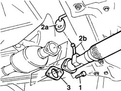
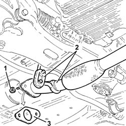

1076B34 front catalytic converter attachment seal - replace
- Path
- Procedures > 10 ENGINE > 1076 EXHAUST PIPES AND SILENCERS > 1076B EXHAUST PIPES AND SILENCERS > 1076B34 front catalytic converter attachment seal - replace
- Kind
- repair procedure (removal / refitting; the operation number is the code)
- Applies to
- all engines; all production periods
- Interactive page
- https://sloeber94.github.io/elrnDB-fDbl/en/#/2584469
Applies to: all engines; all production periods
 Removing
Removing
 Refitting
RefittingPlace the car on a ramp.
1. Undo the bolts securing the pipe to the catalytic converter.
2. Release rubber block (2a) from pipe pin (2b).
3. Remove the gasket from its seat.

Applies to: all engines; all production periods
Removing
RefittingPosition the vehicle on the ramp.
Proceed with the removal 7055B54 under-engine guard - r r .
1. Undo the bolts fixing the exhaust pipe attachment to the engine to the catalytic converter.
2. Release the exhaust pipe attachment to the engine from the flexible mounting block.
3. Remove the front attachment gasket for the catalytic converter.

Applies to: all engines; all production periods
Refitting
RemovingFit the gasket into its seat on the catalytic converter.
Secure the pin to its rubber block.
Tighten the bolts securing the exhaust pipe to the catalytic converter.
 | Fastening | Component | Ø | Value (daNm) |
|---|---|---|---|---|
- | Bolt | EXHAUST PIPE TO ENGINE | M8 | (catalytic converter) 3 |
Remove the vehicle from the ramp.
Applies to: all engines; all production periods
Refitting
RemovingPlace a new front catalytic converter attachment gasket in the housing.
Connect the exhaust pipe attachment to the engine to the flexible mounting block.
Tighten the bolts fixing the exhaust pipe attachment to the engine to the catalytic converter to the recommended torque.
| Fastening | Component | Ø | Value (daNm) |
|---|---|---|---|---|
- | Nut | EXHAUST PIPE TO ENGINE | M8 | (Catalytic converter side) 2.7 ÷ 3.3 |
Proceed with the refitting 7055B54 under-engine guard - r r .
Remove the car from the ramp.